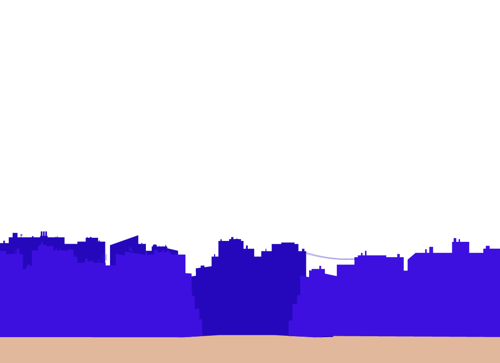
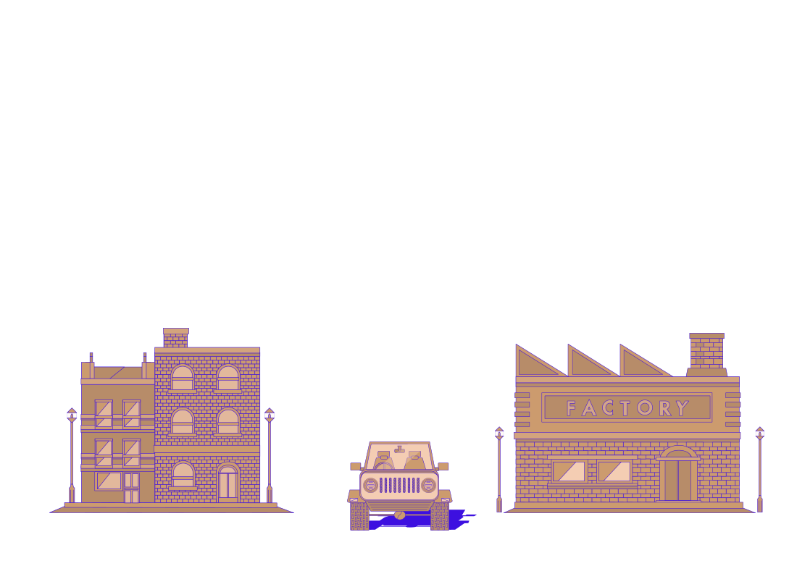
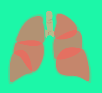

AIR POLLUTION IN LEEDS HAS BEEN A GROWING CONCERN FOR OUR
READERS FOR SOME TIME. HERE, WE PRESENT FOR THE FIRST TIME A
STUDY REVIEWING TWO TYPES OF DATA: AVAILABLE AIR QUALITY
DATA FROM METEREOLOGICAL SENSOR STATIONS IN THE CITY
CENTRE OVER FIVE YEARS AND MEDICAL PRESCRIPTION DATA FOR
RESPIRATORY PROBLEMS OVER THE SAME PERIOD. WE HAVE ANALYSED
THE DATA FOR TRENDS TO SEE IF THERE IS A CORRELATION AS
RESEARCH TO DATE WOULD SUGGEST. WE FIND THAT, IT IS NOT QUITE
AS SIMPLE AS IT MIGHT APPEAR.
AIR POLLUTION IN LEEDS5-YEAR STUDY
YEAR CURVE
Yearly data shows the average NO2
and PM2.5 levels over a 5 year period.
Results tend to suggest the tendency
of air being polluted at the highest
level during the winter months when
the air temperature traditionally gets
lower.
In contrast, the levels of NO2 and
PM2.5 are signifcantly lower during
summer months when air temperature
increases.
WEATHER IMPACT ON AIR QUALITY
Analysing air pollution data for Leeds on an hourly and daily basis covering a
period of 2010 to 2015, several important facts emerge afecting the health of
all those living and working in the area. From the data we are able to see particular
seasonal trends, these show increased levels of dangerous small particle
matter during the winter months. Levels generally show an upward trend
throughout autumn as the weather temperatures drop, this trend is reversed in
the spring as temperatures begin increasing toward summer. In general the
summer months show the lowest levels dangerous air pollution.
There have been periods over the period under study, which show unexplainable
days of extreme contamination. However, the met ofce reported that
particularly bad storms struck the Yorkshire area around the three most prominent
events of very high contamination. Although no direct cause is possible
to attribute to the events, the recurrence of similar outcomes tends to suggest
the thee could be a relationship between the events.
DAILY AIR QUALITY IN LEEDS
Daily Graphic data offers information
regarding daily NO2 levels in Leeds throughout a five year period
(2010-2015).
Results inticate that the highest concentration of NO2 on average
working days can be observed during the peak hours, that
is between the hours of 8-9am in mornings and 5-6pm in the
evening, probably due to the highest circulation of motor
vehicles during these hours.
The lowest levels of air pollution are during a period of late night
and early morning when there traditionally is much lower motor
vehicle usage.
SEVERAL STUDIES TO DATE SUGGEST A RELATION BETWEEN POLLUTION AND THE SYMPTOMS OF ASTHMA
STANFORD UNIVERSITY &
UNIVERSITY OF CALIFORNIA, BERKELEY. (2010)
WHAT :
181 CHILDREN, WITH AND WITHOUT ASTHMA IN THE
CALIFORNIA CITIES OF FRESNO & PALO ALTO.
CONCLUSIONS :
THE RESEARCHERS FOUND THAT AIR POLLUTION
EXPOSURE SUPPRESSED THE IMMUNE SYSTEM'S REGULATORY T CELLS, WHICH LEADS TO GREATER
SEVERITY OF ASTHMA SYMPTOMS.
HTTP://WWW.NEWS.BERKE-LEY.EDU/2010/10/05/ASTHMA/
CINCINNATI CHILDHOOD ALLERGY
AND AIR POLLUTION STUDY
(CCAAPS)
WHAT :
CHILDREN WERE FOLLOWED FROM INFANCY
THROUGH 7 YEARS OF AGE.
CONCLUSIONS :
THE RISKS OBSERVED SUGGEST THAT AIR POLLUTION
EXPOSURE CONTRIBUTES TO NEW ONSET
ASTHMA.
ASSOCIATION BETWEEN AIR POLLUANT AND
ASTHMA EMERGENCY ROOM VISITS & HOSPITAL
ADMISSIONS.
CONCLUSIONS :
SHORT-TERM EXPOSURES TO AIR POLLUTANTS
ACCOUNT FOR INCREASED RISKS OF ASTHMA.
HTTP://WWW.JOURNALS.POLS.ORG
DEPARTMENT OF COMMUNITY
AND FAMILY MEDICINE.
HOW :
ASSOCIATION BETWEEN AIR POLLUTION AND
ASTHMA ADMISSION AMONG CHILDREN IN
HONG-KONG (2008).
WHAT DID THE STUDY SHOW ?
AMBIENT LEVELS OF PM10, PM2.5, NO2 AND O3 WERE
ASSOCIATED WITH CHILDHOOD ASTHMA HOSPITAL
ADMISSION IN HONG KONG.
HTTP://NCBI.NLM.NIH.GOV
AIR POLLUTION IN LEEDS COMPARED WITH ASTHMA MEDICATION COVERING 5 YEARS
This graph specifcally shows the cost of the medication prescribed
for all respiratory problems in Leeds, from 2010 to 2015.
The evolution of the curve informs us of a substantial upward
trend in the cost of prescribed medication for Asthma or respiratory
problem drugs and that there is a progressive rise of those
costs through the years within the study. Additionally, the graphic
shows the amount of medication prescribed to patients in
Leeds over a period of fve years.
Our principal conclusion is that no specifc pattern can be observed
to explain any signifcant change in asthma medication
prescribed during this period as it relates to air pollution.
The comparative chart depicting air pollution in Leeds, along
with the data concerning asthma medication prescribing during
5 years, is presented as a means of demonstrating graphically
the diference in incidence of high levels of air pollution and the
timing of the prescribing of the medications within the study.
Correlating the statistics provided, the results show that there is
no direct relationship between the two data sets. The amount of
medications prescribed to patients increase in a period during
late spring and early fall, when the level of air pollution is
traditionally lower.
Therefore the results contradict the primary hypothesis much
further research in this area is needed to establish the factors
and causal relationships. Several avenues of exploration are pos-
sible, but weather data covering the period in question must be
a consideration to provide information on another of the
contributing factors involved.
CAUSES OF AIR POLLUTION


CARS
Most cars use internal
combustion engines. This leads to the production of
several pollutants, such as :
carbon monoxide
oxides of nitrogen
un-burnt hydrocarbons
particulate matter
HEATING
The use of solid fuel such as coal or
wood for house heating produces
pollutants.
This pollution can highly vary from
one fuel to another. For example, the
use unseasoned (also called green)
wood which results in a lower temperature
combustion consequently produces
way more pollutants than dry
firewood.
FACTORY
The industries are known to be pollutants,
due to their activities and transformations.
Many of them have need
of power generation, combustion processes
and massive heating requirements.
When efforts are made to
reduce these releases and use more
green energy, they still emit a mixture
of nitrogen oxide (NOx) and nitrogen
dioxide (NO2).
COMPOSITION OF CONTAMINATION PARTICLES
PM2.5 stands for particulate matter with less than 2.5 µm diameter (for information, the diameter of a hair is 50 to 70 µm). They are also referred to as “fine particles” and stay in suspension in the atmosphere. 43% of them are the result of wood combustion, coal combustion or oil combustion. The manufacturing industry represents 9.5%, diesel vehicles 8.4%, construction sector 6.6%, and agriculture and forestry 4.7%.
EFFECTS ON LUNGS

The effects of pollution on the body : every year, 3 millions
people die from diseases caused by air pollution :
that's 5% of the annual global deaths.
As a matter of fact, pollution brings allergies & problems
that can have an impact on the respiratory system. A
long -term exposure can lead to asthma, chronic bronchitis,
lung cancer...
As a matter of fact, pollution brings allergies & problems
that can have an impact on the respiratory system. A
long -term exposure can lead to asthma, chronic bronchitis,
lung cancer...
The consequences are diferent depending on people,
but some groups of population are more at risk : children,
elderly persons, or deprived families with less
access to healthcare.